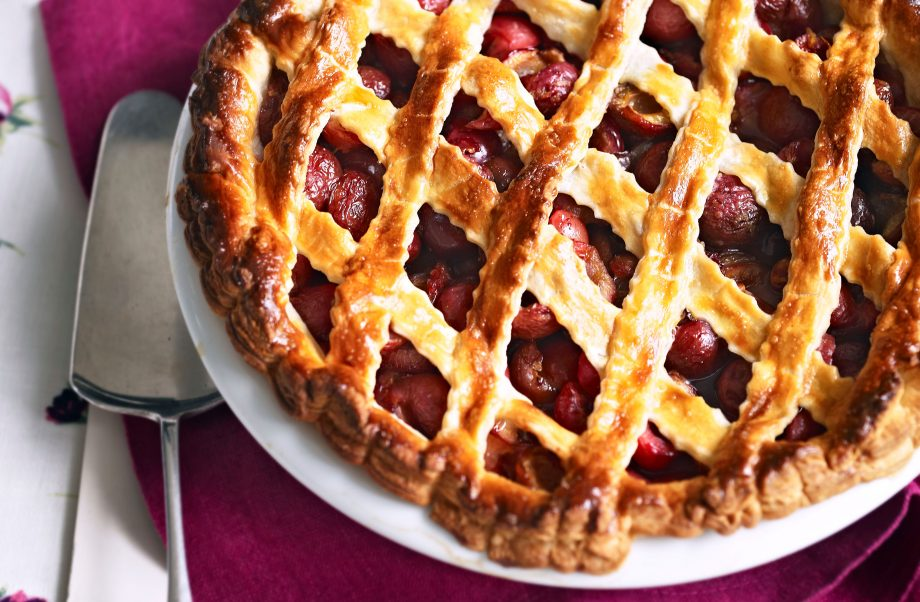

Cherry lattice pie recipe

Makes:
Cost:
Prep:
Cooking:
Skill:
6 - 8
Cheap
25 Min
1 Hr
Easy
This classic cherry lattic pie is much easier to make than it may look. With a buttery, sugary pastry and a filling of sweet, tangy cherries with a sprinkle of lemon, this delicious pie is a the ideal summer dessert. Serve with ice cream, custard or fresh cream. This recipe serves up to 8 people and takes 1hr and 25 mins to prepare and cook. Once you’ve perfected this recipe you could try experimenting with other fruits too such as strawberries and blackberries.
Ingredients
-
375g packet all-butter puff pastry
- 1-2 tbps granulated sugar
For The Filling:
- 750g-1kg cherries, stoned and halved
- 4 level tbps caster sugar
- Finely zested rind of 1 lemon
- Custard or cream, to serve
Method
- Set the oven to 220°C/425°F/Gas Mark 7 and put the pie dish in the oven to heat up.
- Roll out about three-quarters of the pastry and line the pie dish, leaving it hanging over the edge of the dish.
- In a large bowl, mix together the cherries, sugar, cornflour and lemon rind, then tip the mixture onto the pastry base.
- Roll out the remaining pastry and cut into strips 2-3cm wide, re-rolling as necessary.
- Brush water around the pastry on the rim of the dish and place the pastry strips on top, pressing them down well at the ends. Trim away the excess pastry around the dish’s rim, and press well with your thumb to pattern around the edge, and make cuts into it using a small knife.
- Place the pie dish on the hot baking sheet and bake for 15 minutes, then reduce the oven temperature to 180°C/350°F/Gas Mark 4 for a further 30-40 mins until the pastry is cooked, and the cherries feel tender when pierced with the tip of a knife or a skewer.
- Remove the pie from the oven and serve hot or warm with custard or cream.
Top tip for making Cherry lattice pie
This pie is also good made with all-butter shortcrust pastry rather than puff pastry.